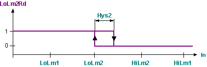
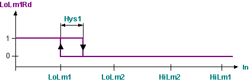

LIMIT_R：实际值的限制
LIMIT_R (FB455) 块将实数限制为两个上限和两个下限值。
功能性
该块将输入 [In] 处的值限制为上限 1 [HiLm1]、下限 1 [LoLm1]、上限 2 [HiLm2] 和下限 2 [LoLm2]。
当达到或超过相应限制时，将设置相关输出 [HiLm1Rd]、[LoLm1Rd]、[HiLm2Rd] 和 [LoLm2Rd]。一旦不再达到 +/- 迟滞限制，输出就会复位。可以针对极限值对 1 [Hys1] 和极限值 2 [Hys2] 分别对滞后进行参数化。
通过输入 [EnFnct] = 1（是）启用限值监控。当 [EnFnct] = 0（否）时，输出关闭并重置时间。
限值监控可能会有时间延迟。仅当超出极限值超过参数化延迟时间时，才会设置相关输出。然后，[Dly1] 应用于极限值对 1，[Dly2] 应用于极限值对 2。输出立即复位。
标准设定
尽管可以根据需要使用和安排各个限值，但限值对 2 通常用于与正常值的较大偏差（例如，作为危险限值），而限值对 1 用于与正常值的轻微偏差（例如，警告限值）。然后结果如下：[LoLm2] < [LoLm12] < 正常值 < [HiLm1] < [HiLm2]。
图表
图 1 至 4 表示无时间延迟的响应（Dly1 = Dly2 = 0 秒）。
图 1：输出响应 [HiLm1Rd]。

图 2：输出响应 [HiLm2Rd]。

图 3：输出响应 [LoLm2Rd]。

图 4：输出响应 [LoLm1Rd]。

图 5：给定 [In] 响应时 [HiLm1Rd] 的时间相关响应。

输入
Pin | E | Description |
EnFnct | p | 启用功能。 1（是）：该功能已启用。 0（否）：该功能被禁用。 当 [EnFnct] = 0 时，所有输出均复位。 |
In | pa | 输入。 模拟输入值（例如测量值）。 |
HiLm2 | pa | 上限2. 限值对 2 的上限值。 |
HiLm1 | pa | 上限 1. 限值对 1 的上限值。 |
LoLm1 | pa | 下限1。 限值对 1 的下限值。 |
LoLm2 | pa | 下限2。 限值对 2 的下限值值。 |
Hys1 | pa | 迟滞 1. 如果 [In] < [HiLm1] - [Hys1]，则会重置违反上限 1 的情况。如果 [In] > [LoLm1] + [Hys1]，则重置违反下限 1 的情况。 |
Hys2 | pa | 迟滞 2. 如果 [In] < [HiLm2] - [Hys2]，则会重置违反上限 2 的情况。如果 [In] > [LoLm2] + [Hys2]，则重置违反下限 1 的情况。 |
Dly1 | pa | 延迟控制限制 1。 仅当超出极限值的时间超过 [Dly1] 时，才会设置输出 [HiLm1Rd] 和 [LoLm1Rd]。 |
Dly2 | pa | 延迟控制限制2。 仅当超出极限值的时间超过 [Dly2] 时，才会设置输出 [HiLm2Rd] 和 [LoLm2Rd]。 |
输出
Pin | E | Description |
HiLm2Rd | a | 已达到上限 2。 达到或超过上限 2 的时间超过 [Dly2]。 |
HiLm1Rd | a | 已达到上限 1。 达到或超过上限 1 的时间超过 [Dly1]。 |
LoLm1Rd | a | 已达到下限 1。 达到或违反下限 1 的时间超过 [Dly1]。 |
LoLm2Rd | a | 已达到下限 2。 SUB_R 减去两个实数值。 |
输入值
Pin | Description | Data type | Default value | E.g. Engineering unit or Text group | Min. | Max. |
EnFnct | 启用功能。 | 布尔值 | 1（是） | 不，是 |
|
|
In | 输入。 | 真实的 | 0.0 |
|
|
|
HiLm2 | 上限2. | 真实的 | 0.0 |
|
|
|
HiLm1 | 上限 1. | 真实的 | 0.0 |
|
|
|
LoLm1 | 下限1。 | 真实的 | 0.0 |
|
|
|
LoLm2 | 下限2。 | 真实的 | 0.0 |
|
|
|
Hys1 | 迟滞 1. | 真实的 | 0.0 |
|
|
|
Hys2 | 迟滞 2. | 真实的 | 0.0 |
|
|
|
Dly1 | 延迟控制限制 1。 | 时间 | 0ms | T#0d_0h_0m_0s_0ms |
|
|
Dly2 | 延迟控制限制2。 | 时间 | 0ms | T#0d_0h_0m_0s_0ms |
|
|
输出值
Pin | Description | Data type | Default value | E.g. Engineering unit or Text group | Min. | Max. |
HiLm2Rd | 已达到上限 2。 | 布尔值 | 0（否） | 不，是 |
|
|
HiLm1Rd | 已达到上限 1。 | 布尔值 | 0（否） | 不，是 |
|
|
LoLm1Rd | 已达到下限 1。 | 布尔值 | 0（否） | 不，是 |
|
|
LoLm2Rd | 已达到下限 2。 | 布尔值 | 0（否） | 不，是 |
|
|
应用
通过用于控制任务的两个极限值对对测量值进行极限值监控。后续报警块还允许执行报警监控任务。
过程响应
在启动期间，所有旧值和当前延迟都会重置。这意味着仅当违反相关限制并且时间延迟到期时才会设置输出。然后使用相应输入处的值处理该块。根据处理顺序，这些值要么表示由先前启用的块计算的输出值，要么表示该块的特定于实例的默认值。
故障排除
标准（参见General rules and information).